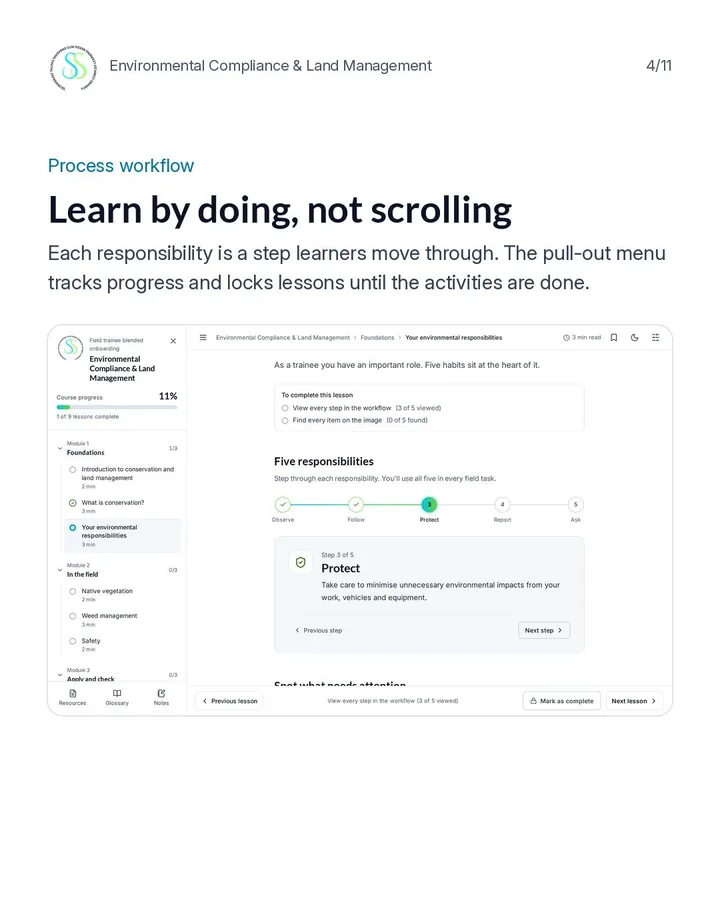

EC-01Course shell

Learn by doing, not scrolling
- On screen
- Five responsibilities, each a step the learner moves through.
- Interaction
- Pull-out menu tracks progress and locks lessons until the activities are done. Previous and Next lesson buttons.
- Audio
- None.